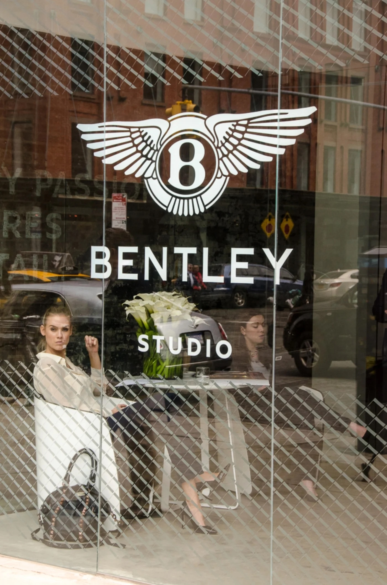

VISIONARY EXPERIENCE
Creative Director
Momentum Worldwide
Cannes Case Study
to redefine all boundaries in a car,
embodying his uncompromising love of speed,
performance, and competitive excellence.
His vision pushed the limits of exhilaration.
And with each new model, he pushed further.
The passion of our artists, craftsmen, and women
now prepares to forge from superformed aluminum,
leather, and wood
one more vision — yours.
Behind our workshop's walls, nothing is standard.
And luxury has no limits.
There is only what you envision,
awaiting to manifest as limitless experience.
A ride as thrilling as the hunt and hustle to acquire it.
A fitting so bespoke, it's a true expression of the one who commissions it.
A rare opportunity to be counted among those
who break boundaries and defy impossibilities.
4,000 of us stand strong in Crewe.
Ready to unleash your singular vision.
LUXURY UNBOUND
Manifesto film





Studio Walkthrough
"What It's Like To Buy A $200K Bentley In 2014"
"Bentley Lets Consumers Build Custom Cars"
"Bentley Studio Gives Customers A Chance To Design Their Dream Car"
"Bentley Studio puts a new spin on special-order cars"
THE CHALLENGE
Bentley offered 1.3 billion customization options. Most buyers chose triple black. The paradox of infinite choice. When you can have anything, you default to nothing. The question wasn't what customers wanted. The question was how to help them discover it.
THE INSIGHT
Don't show them options. Show them images. Decode their taste. Before AI-driven personalization was a buzzword, we built an algorithm that turned subconscious preferences into bespoke specifications.
THE WORK
We built a new kind of showroom. 200 curated photographs. RFID key cards. Selections plotted on a matrix of adrenaline versus serenity, legacy versus future. Patterns emerged. Then came the consultation — Bentley designers imported from Crewe, leather swatches, color pucks — now with a roadmap drawn from the customer's own subconscious.
THE IMPACT
A pop-up in the Meatpacking District became a three-year global platform. New York. Los Angeles. Pebble Beach. Miami. Aspen. Shanghai. London. Within months, Porsche and Mercedes opened their own experiential pop-ups. The craze had begun.